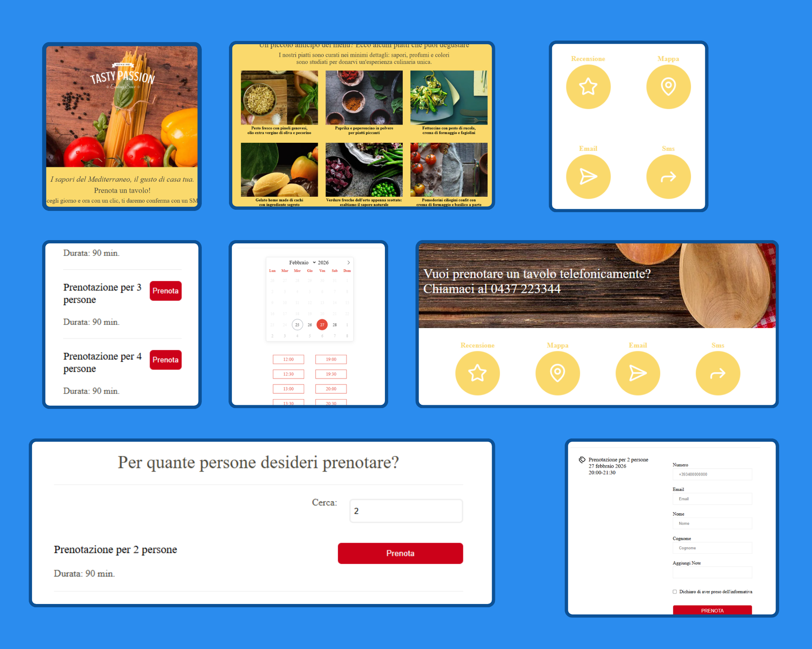

Landing Page di degustazioni
Realizzata una landing page "I sapori del
Mediterraneo":
vedi Template.
span
Il progetto è gestito dinamicamente tramite
JavaScript per la scelta
e ricerca della prenotazione
e la gestione del form, inoltre è
totalmente responsive.

Quali tecnologie ho usato?
- HTML: per definire la struttura della pagina, privilegiando l'accessibilità e la SEO.
- CSS: per curare l'estetica del sito tramite fogli di stile, implementando layout flessibili con Flexbox. La pagina è progettata per essere totalmente responsive, adattandosi perfettamente a ogni dispositivo, dallo smartphone al desktop.
- JS: per gestire la dinamicità dell'interfaccia, inclusa la logica per la selezione dei posti, la ricerca delle prenotazioni in tempo reale e la validazione dei dati inseriti nel form.
- Lucide Icon: una libreria di icone vettoriali che contribuisce a rendere l'interfaccia intuitiva .
- Flatpickr: un'integrazione esterna leggera e potente che fornisce un calendario interattivo per la scelta della data di prenotazione, ottimizzando l'esperienza di input dell'utente ed evitando errori di formattazione.
Altre informazioni sul progetto
- Anno: 2026
- Ruolo: Web Developer Front-end